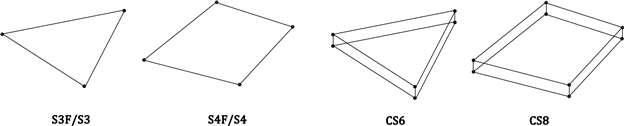
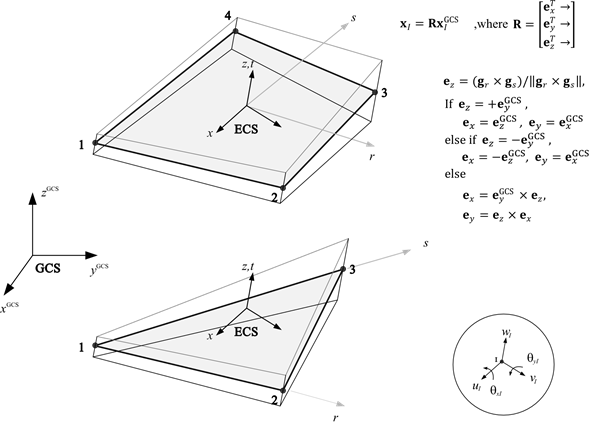
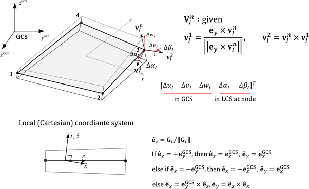
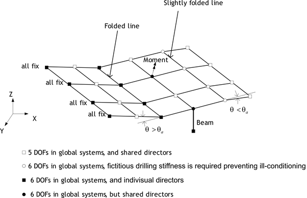
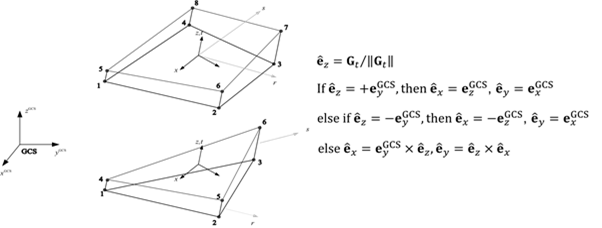
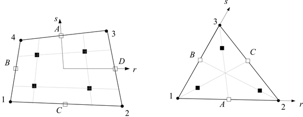
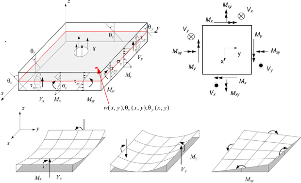

4.5 Shell
A shell structure can be defined as a structure with a thin thickness relative to its span. From the perspective of stress conditions, the stress in the thickness direction is zero, and shell elements must be used for the modeling of shell structures. Shell finite elements are broadly categorized into conventional shell elements and continuum shell elements (see Figure 7.1). Generally, a conventional shell element refers to a shell element that is discretized based on a reference plane, which is usually set as the mid-surface. Nodes on the reference plane have three translational degrees of freedom and two or three rotational degrees of freedom. In contrast, continuum shell elements have translational degrees of freedom at the nodes, similar to conventional continuum elements, and can be modeled similarly to continuum elements, making them convenient to use in certain situations.

Fig. 4.5-1. Shell elementsElement Types
- S3F: 3-node triangular flat shell
- S4F: 4-node quadrilateral flat shell
- S3: 3-node triangular general shell
- S4: 4-node quadrilateral general shell
- CS6: 6-node triangular continuum shell
- CS8: 8-node quadrilateral continuum shell
Element Cross-Section
- Shell: Defines a homogeneous or general layered shell section.
- CompositePlate: Defines a laminated composite plate section for S3F/S4F flat shell elements.
Element-Specific Properties (Distribution)
- NodalThickness: Specifies the thickness at each node for variable thickness elements.
Conventional shell elements are divided into flat shell elements (S3F, S4F) and general shell elements (S3, S4). Flat shells are assumed to be flat. Therefore, the thickness direction vector is constant, and the ECS of the element is defined. During the formulation process, the stress-strain relationship is used as the constitutive equation. General shell elements, on the other hand, can model curved surfaces by defining the thickness direction vector (director vector) at the nodes, and the stress-strain relationship is used as the constitutive equation. Since the formulation is based on the reduction of continuum elements to a reference plane, it is also called a degenerated shell. As general shell elements are curved, different local coordinate systems (LCS) are defined at the material points. When applied to flat conditions, the results are the same as those of flat shells.
All conventional shell elements apply the AS (Assumed Strain) method using the MITC technique to eliminate shear locking. For integration in the thickness direction, three methods are supported: Lobatto, Legendre, and Newton-Cotes. By default, Lobatto uses 3 points for linear materials and 4 points for nonlinear materials; Legendre uses 2 points for linear materials and 3 points for nonlinear materials; and Newton-Cotes uses 3 points for linear materials and 5 points for nonlinear materials.

Fig. 4.5-2. Element Coordinate System for S4F and S3F
Fig. 4.5-3. Local Coordinate System for S4 and S3Conventional shell elements are defined with 5 degrees of freedom per node. However, if adjacent elements have 3 rotational degrees of freedom, if boundary conditions or load conditions are applied to the rotational degrees of freedom, or if the normal vector of the node differs from that of the adjacent shell elements, it automatically changes to 6 degrees of freedom.

Fig. 4.5-4. Handling ⅚ DOF in S3, S4, S3F, and S4FSolid shell elements are shell elements that can be modeled in the same manner as regular solid elements. They have 3 degrees of freedom per node. Various locking issues are eliminated by applying the AS (Assumed Strain) method as well as the EAS (Enhanced Assumed Strain) method. The material model uses a 3D material model. Therefore, an arbitrary or desired orthogonal coordinate system can be chosen as the local coordinate system. However, for consistency with general shell elements, the thickness direction is set as the z-direction of the local coordinate system. Integration in the thickness direction is the same as for general shell elements. Three methods are supported: Lobatto, Legendre, and Newton-Cotes. By default, Lobatto uses 3 points for linear materials and 4 points for nonlinear materials; Legendre uses 2 points for linear materials and 3 points for nonlinear materials; and Newton-Cotes uses 3 points for linear materials and 5 points for nonlinear materials.

Fig. 4.5-5. Local Coordinate System for SC8 and SC6Shell elements can output results at the 4 or 3 integration points within the plane, as shown in the figure. S3F and S4F provide section forces and strains at the mid-surface, while S3, S4, CS6, and CS8 output stresses and strains at the top and bottom integration points in the thickness direction. Section forces are calculated based on the mid-surface using integration.

Fig. 4.5-6. Integration Points for 4-node and 3-node Shell Elements
Fig. 4.5-7. Definition of Section Forces in Shell ElementsExample
*Material,Type=IsoElasticity,Name=mat
30E9, 0.18, 0, 2000. # E, nu, alpha, density
*Section, Type=Shell,Name=sec
mat, 0.01 # h
*Element, Type=S4F
1, 1, 2, 3, 4, S=sec
4.5.1 *Element, Type=S3F
Defines a 3-node flat shell element.
*Element, Type=S3F, Elset=elset
id,n1,n2,n3 {, S=section}
...
Specifications
- No. of nodes: 3
- Fields: SSF=[Nx Ny Nxy Mx My Mxy Vx Vy], SSE=[Ex Ey Gxy Kx Ky Kxy Gxz Gyz], SST=[T0 Tz] at each Gauss point for the midsurface. Material response is output at the bottom/top thickness integration points for a homogeneous
Shellsection, at the bottom/top thickness integration points of each layer for a layeredShellsection, or at one ply-center laminar evaluation point per layer for aCompositePlatesection. - Compatible section type:
Shell,CompositePlate - Active DOFs: X, Y, Z, SRX, SRY
4.5.2 *Element, Type=S4F
Defines a 4-node flat shell element.
*Element, Type=S4F, Elset=elset
id,n1,n2,n3,n4 {, S=section}
...
Specifications
- No. of nodes: 4
- Fields: SSF=[Nx Ny Nxy Mx My Mxy Vx Vy], SSE=[Ex Ey Gxy Kx Ky Kxy Gxz Gyz], SST=[T0 Tz] at each Gauss point for the midsurface. Material response is output at the bottom/top thickness integration points for a homogeneous
Shellsection, at the bottom/top thickness integration points of each layer for a layeredShellsection, or at one ply-center laminar evaluation point per layer for aCompositePlatesection. - Compatible section type:
Shell,CompositePlate - Active DOFs: X, Y, Z, SRX, SRY
4.5.3 *Element, Type=S3
Defines a 3-node conventional shell element.
*Element, Type=S3, Elset=elset
id,n1,n2,n3 {, S=section}
...
Specifications
- No. of nodes: 3
- Fields: SSF=[Nx Ny Nxy Mx My Mxy Vx Vy] at each in-plane Gauss point. Material response fields such as S and E are output at the bottom/top thickness integration points for a homogeneous
Shellsection, or at the bottom/top thickness integration points of each layer for a layeredShellsection. SSE and SST are not output for this element type. - Compatible section:
Shell - Active DOFs: X, Y, Z, SRX, SRY
4.5.4 *Element, Type=S4
Defines a 4-node conventional shell element.
*Element, Type=S4, Elset=elset
id,n1,n2,n3,n4 {, S=section}
...
Specifications
- No. of nodes: 4
- Fields: SSF=[Nx Ny Nxy Mx My Mxy Vx Vy] at each in-plane Gauss point. Material response fields such as S and E are output at the bottom/top thickness integration points for a homogeneous
Shellsection, or at the bottom/top thickness integration points of each layer for a layeredShellsection. SSE and SST are not output for this element type. - Compatible section:
Shell - Active DOFs: X, Y, Z, SRX, SRY
4.5.5 *Element, Type=CS6
Defines a 6-node solid shell element.
*Element, Type=CS6, Elset=elset
id,n1,n2,n3,n4,n5,n6 {, S=section }
...
Specifications
- No. of nodes: 6
- Fields: SSF=[Nx Ny Nxy Mx My Mxy Vx Vy] at each in-plane Gauss point. Material response fields such as S and E are output at the bottom/top thickness integration points for a homogeneous
Shellsection, or at the bottom/top thickness integration points of each layer for a layeredShellsection. SSE and SST are not output for this element type. - Compatible section:
Shell - Active DOFs: X, Y, Z
4.5.6 *Element, Type=CS8
Defines a 8-node solid shell element.
*Element, Type=CS8, Elset=elset
id,n1,n2,n3,n4,n5,n6,n7,n8 {, S=section }
...
Specifications
- No. of nodes: 8
- Fields: SSF=[Nx Ny Nxy Mx My Mxy Vx Vy] at each in-plane Gauss point. Material response fields such as S and E are output at the bottom/top thickness integration points for a homogeneous
Shellsection, or at the bottom/top thickness integration points of each layer for a layeredShellsection. SSE and SST are not output for this element type. - Compatible section:
Shell - Active DOFs: X, Y, Z
4.5.7 *Section, Type=Shell
Defines a homogeneous or layered shell section. A single material data line defines a homogeneous shell section. Two or more material data lines define a layered shell section. Layered shell sections can be used with S3, S4, S3F, S4F, CS6, and CS8.
Homogeneous section:
*Section, Type=Shell, Name=name[, Offset=offset][, Mass=Consistent|Lumped][, Thickness=Uniform|Nodal]
material, h[, integration[, ngauss]]
material, h, NSLayer
Layered section:
*Section, Type=Shell, Name=name[, Offset=offset][, Mass=Consistent|Lumped][, Thickness=Uniform|Nodal]
material1, h1[, integration[, ngauss]]
material2, h2
...
material, h, NSLayer
Keyword line
- Name=name: Section name (required). Section names must be unique.
- Offset=offset: Distance from the shell's midsurface to the reference surface defined by the node. Expressed as a ratio of the structural section thickness, or total structural thickness for a layered section. A value of +0.5 places the reference surface at the structural top surface, while -0.5 places it at the structural bottom surface.
NSLayer, if present, is not included in this thickness and does not move the node-defined reference surface. All physical quantities of the shell element are defined at the reference surface. Not used for ContinuumShell. - Mass=Consistent|Lumped: Consistent or Lumped, which specifies whether the mass is consistent or lumped, respectively. (Optional, default: Consistent)
- Thickness=Uniform|Nodal: Controls whether
*Nprop, Type=ShellThicknessis used.Nodaluses nodal thickness if available.Uniformignores nodal thickness and uses the section data-line thickness. (Optional, default: Nodal)
Data lines
- material: Material name (required).
- h: Thickness (required) [L]. For
Thickness=Nodal, nodal thickness overrides the total structural section thickness when*Nprop, Type=ShellThicknessis specified. For a layered section, each structural layer thickness is scaled by the same ratio so the total structural thickness matches the nodal thickness. - material, h, NSLayer: Optional. Defines a non-structural layer attached to the top side of the homogeneous section or structural layer stack. If present, this data line must be the last data line and only one
NSLayermarker is allowed.materialmust be an existing material with positive density, andhmust be a positive thickness [L].NSLayercontributes only to mass and gravity/self-weight load, not to stiffness or internal force. It is not counted as a structural layer,LayerId, or material-field output target. It also does not change node coordinates, the reference surface, or the structural bottom/top surface positions; these remain based on the structural shell stack only. - integration: Common integration method in the thickness direction. One of Lobatto, Legendre, or NewtonCotes. For layered shell input, specify it only on the first material data line. (Optional, default: Lobatto)
- ngauss: Common number of integration points in the thickness direction. If omitted, the default is 3 for linear materials and 4 for nonlinear materials when using Lobatto, 2 for linear materials and 3 for nonlinear materials when using Legendre, and 3 for linear materials and 5 for nonlinear materials when using NewtonCotes. For layered shell sections, an explicitly specified value must be 2 or greater.
If two or more material data lines are specified, each line defines one layer and LayerId is assigned in input order starting from 1. The integration[, ngauss] fields on the first data line are common thickness-integration options for the whole section and are applied identically within each layer thickness interval.
For homogeneous shell sections, responses such as stress and strain at material points are defined at the center point if ngauss is 1, and at thickness integration points if ngauss is 2 or greater.
For layered shell sections, the number of thickness integration points must be 2 or greater. The same thickness integration rule used by homogeneous shell sections is applied independently within each layer thickness interval. Material field output such as stress and strain exposes only the bottommost and topmost thickness integration points of each layer. With an integration rule such as Legendre that does not include endpoints, these points are the lowest and highest integration points inside the layer, not the physical layer surfaces.
Layered CS6/CS8 shells support ordinary analysis, mass, gravity load, material-field output, embedded constraints, and point/line sensors. Point/line sensors use a directional strain matrix that reflects layer-wise thickness integration, while embedded constraints use the displacement interpolation matrix from the same field-matrix path.
For simple NSLayer verification cases, see the Example/V.4 Shell Element/*-SSPlate40x14-NSLayerVV.inp files for S3, S3F, S4, S4F, CS6, and CS8. They check that the point-load response is unchanged from the corresponding structural layered shell, the frequency decreases when the non-structural layer mass is added, and the gravity response for Scope=All matches the sum of Scope=Structural and Scope=NonStructural.
Example
*MATERIAL, Type=IsoElasticity Name=matDeck
25.000e9, 0.18, 0, 2500.
*SECTION, Type=Shell, Name=deck
matDeck, 0.4
*SECTION, Type=Shell, Name=deckOffset, Offset=-0.5, Mass=Lumped
matDeck, 0.12, Lobatto, 4
*MATERIAL, Type=OrthoElasticity, Name=matDeckTop
21.210e9, 14.616e9, 15.616e9, 11.115e9, 11.115e9, 6.669e9, 0.182, 0.182, 0.182, 0., 0., 0., 3883.
*MATERIAL, Type=OrthoElasticity, Name=matDeckWeb
16.210e9, 12.616e9, 12.616e9, 11.115e9, 11.115e9, 6.669e9, 0.182, 0.182, 0.182, 0., 0., 0., 3883.
*SECTION, Type=Shell, Name=deckLayered
matDeckTop, 0.01, Lobatto, 3
matDeckWeb, 0.08
matDeckTop, 0.01
matDeckTop, 0.02, NSLayer
4.5.8 *Section, Type=CompositePlate
Defines a laminated composite plate section for flat shell elements. This section type is supported only by S3F and S4F. Each ply material must be an elastic material that supports laminar shell response.
*Section, Type=CompositePlate, Name=name[, Offset=offset][, Mass=Consistent|Lumped][, Thickness=Uniform|Nodal]
material1, h1[, angle1[, auto|standard]]
material2, h2[, angle2]
...
material, h, NSLayer
Keyword line
- Name=name: Section name (required). Section names must be unique.
- Offset=offset: Distance from the structural ply-stack midsurface to the reference surface, expressed as a ratio of the total structural ply thickness.
NSLayer, if present, is not included in this thickness and does not move the node-defined reference surface. - Mass=Consistent|Lumped: Consistent or Lumped mass formulation. (Optional, default: Consistent)
- Thickness=Uniform|Nodal: Controls whether
*Nprop, Type=ShellThicknessis used.Nodaluses nodal thickness if available.Uniformignores nodal thickness and uses the total ply thickness. (Optional, default: Nodal)
Data lines
- material: Elastic material name with laminar shell response support (required).
- h: Ply thickness (required) [L]. For
Thickness=Nodal, structural ply thicknesses are scaled by the same ratio so that the total structural thickness matches the nodal thickness. - material, h, NSLayer: Optional. Defines a non-structural layer attached to the top side of the structural ply stack. If present, this data line must be the last data line and only one
NSLayermarker is allowed.materialonly needs to be an existing material with positive density; it does not need to support laminar shell response.hmust be a positive thickness [L].NSLayercontributes only to mass and gravity/self-weight load, not to stiffness or internal force. It is not counted as a ply,LayerId, or material-field output target. It also does not change node coordinates, the reference surface, or the structural bottom/top surface positions; these remain based on the structural ply stack only. - angle: Ply angle (optional, default 0.). If the material has an optional
cs, thecsaxis-1 is first projected into the shell local plane to define the base axis; that base axis is then rotated byangleabout the shell normal. Ifcsis not given,angleis applied from the shell local 1-axis. This rotation order is applied consistently to stiffness and thermal expansion components. - auto|standard: Transverse shear correction mode for the whole composite plate section.
autocomputes the transverse shear correction automatically.standarduses the standard shear correction factor. This option is allowed only on the first data line. (Optional, default: auto)
CompositePlate is not a general layered shell with through-thickness numerical integration in each layer. Each ply/lamina is evaluated once at its ply-center laminar response point, and material field output such as stress and strain is provided at that single point for each LayerId.
Example
*SECTION, Type=CompositePlate, Name=deckComposite, Thickness=Nodal
lamina, 0.00025, 0
lamina, 0.00025, 45
lamina, 0.00025, -45
lamina, 0.00025, 90
lamina, 0.00025, 90
lamina, 0.00025, -45
lamina, 0.00025, 45
lamina, 0.00025, 0
matDeck, 0.002, NSLayer